Objetivo
Al terminar tendrás una escena Jugador (CharacterBody2D) con su dibujo, su forma de colisión y una cámara. Con A/D o las flechas se moverá, y con Espacio saltará, pero solo cuando esté pisando el suelo.
Partimos de: El proyecto de inicio (descárgalo abajo): una escena nivel.tscn con un fondo y un TileMapLayer llamado Suelo ya dibujado, la carpeta assets con los dibujos de Pixel Adventure, las acciones izquierda, derecha y saltar en el Mapa de Entrada y el filtro de texturas en Nearest para que el pixel art se vea nítido.
Nodos y conceptos
CharacterBody2DCuerpo físico que movemos nosotros desde el código. Choca con el suelo y las paredes, pero no lo empuja la física como a un RigidBody2D.
velocityVelocidad del cuerpo en píxeles por segundo: x horizontal y y vertical (hacia abajo es positiva).
move_and_slide()Mueve el cuerpo según velocity y lo hace deslizar por el suelo y las paredes en vez de atravesarlos.
is_on_floor()Devuelve true si el cuerpo está pisando suelo. Lo usamos para no saltar en el aire.
Input.get_axis()Junta dos acciones en un número: -1 (izquierda), 0 (nada) o 1 (derecha).
Camera2DCámara que muestra la parte del nivel que rodea al nodo del que es hija. Con los límites no enseña lo que hay fuera del nivel.
Paso a paso
1Punto de partida
Abre el proyecto de inicio. La escena nivel.tscn ya tiene un Fondo y un Suelo (un TileMapLayer: un mapa de baldosas con colisión). En assets/jugador están los dibujos de la rana.
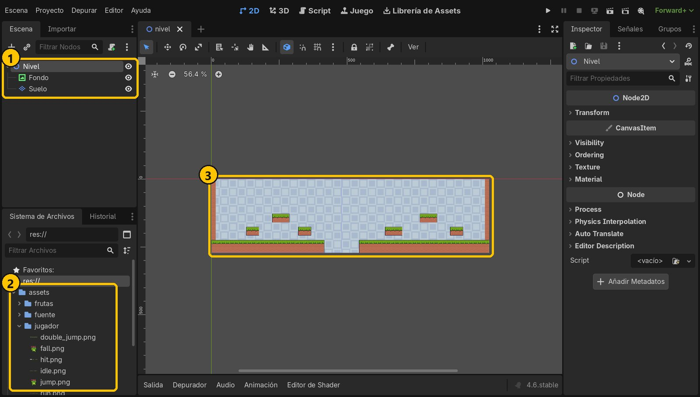
- 1Nivel, Fondo y Suelo
- 2Dibujos del jugador
- 3El nivel con un hueco
2Mira las acciones de entrada
En Proyecto → Configuración del Proyecto → Mapa de Entrada ya están las tres acciones que usaremos: izquierda, derecha y saltar. Cada una tiene varias teclas. Cierra la ventana.
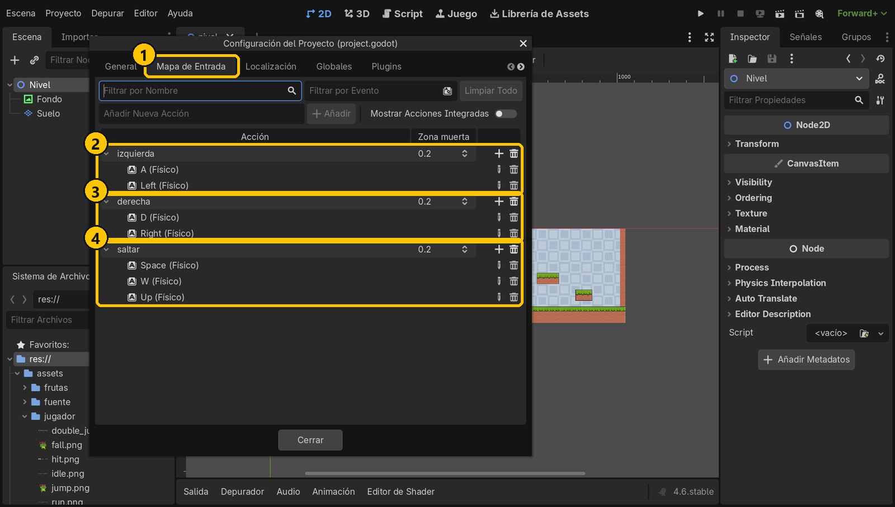
- 1Mapa de Entrada
- 2A y ←
- 3D y →
- 4Espacio, W y ↑
3Nueva escena con un CharacterBody2D
Crea una escena nueva (Ctrl+N), pulsa Otro Nodo, busca CharacterBody2D y pulsa Crear. Renómbralo a Jugador (F2).
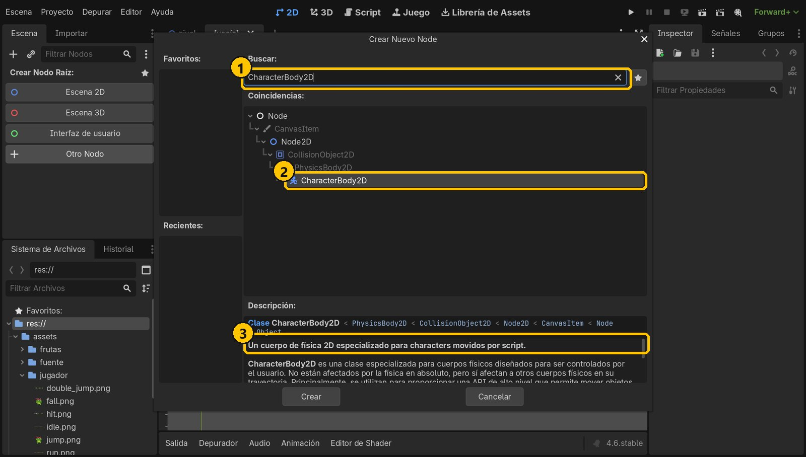
- 1Busca CharacterBody2D
- 2CharacterBody2D
- 3Lo mueve un script
4Dale un dibujo
Añade a Jugador un hijo Sprite2D (Ctrl+A). Arrastra assets/jugador/idle.png a su Texture. Esa imagen es una tira de 11 dibujos: en Animation → Hframes pon 11 para ver solo uno.
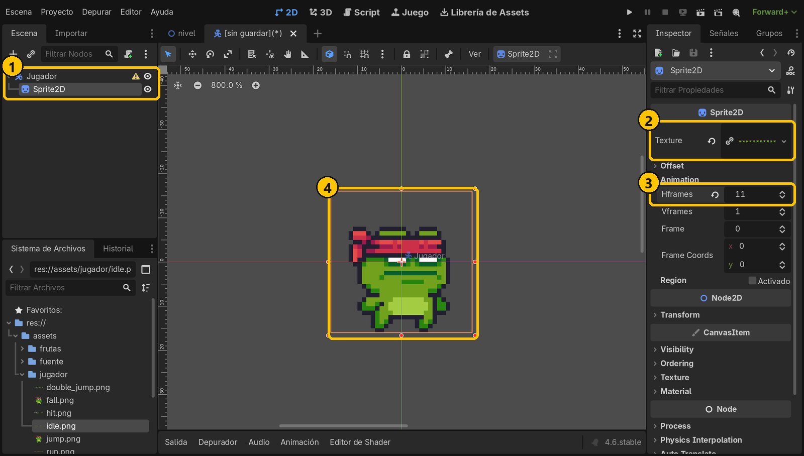
- 1Sprite2D, hijo de Jugador
- 2idle.png
- 3Hframes: 11
- 4Un solo dibujo
5Dale una forma de colisión
Añade a Jugador un CollisionShape2D. En Shape elige Nuevo RectangleShape2D y dale un tamaño de 18 × 26. En Transform → Position pon y = 3, para que la forma acabe justo en los pies.
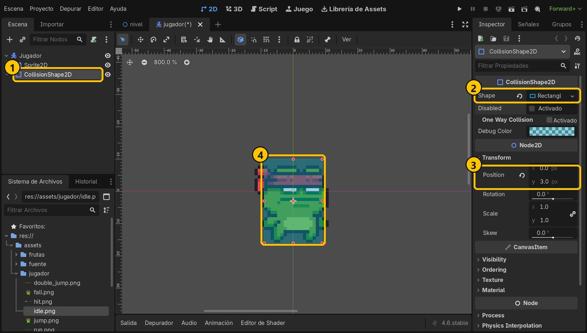
- 1CollisionShape2D
- 2Rectángulo 18 × 26
- 3Position: 0, 3
- 4Cubre el cuerpo
6Guarda la escena
Guarda con Ctrl+S como jugador.tscn. Tener al jugador en su propia escena nos permitirá ponerlo en cualquier nivel.
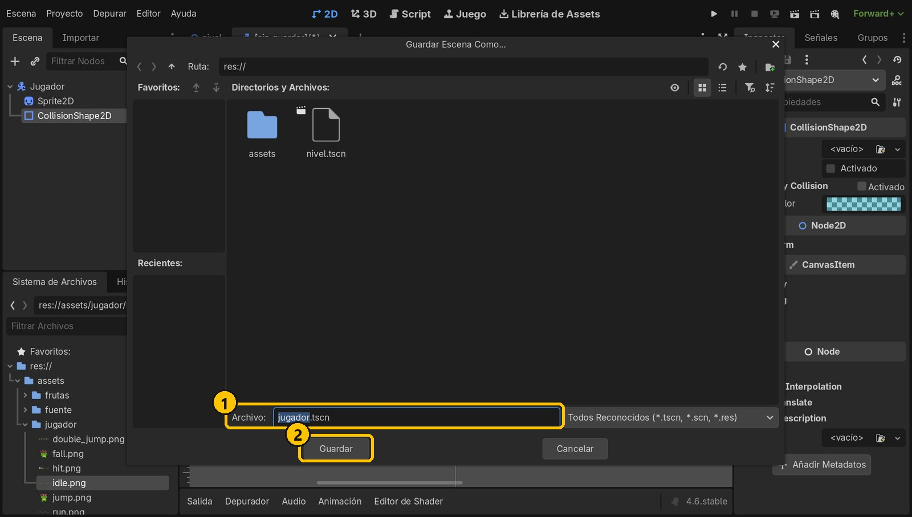
- 1jugador.tscn
- 2Guardar
7Añade un script sin plantilla
Selecciona Jugador y pulsa el botón de añadir script. Hereda de CharacterBody2D. Desmarca Plantilla: Godot trae una con movimiento ya hecho, pero aquí lo escribiremos nosotros para entenderlo. Se guarda como res://jugador.gd. Pulsa Crear.
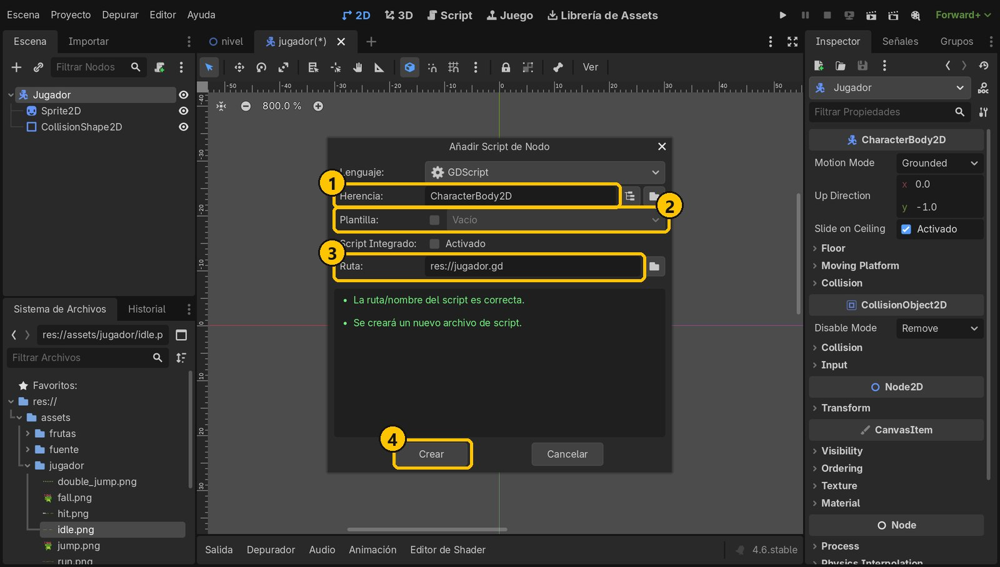
- 1Hereda de CharacterBody2D
- 2Sin plantilla
- 3jugador.gd
- 4Crear
8Escribe el controlador
Escribe este código y guarda. En _physics_process (60 veces por segundo): si está en el aire le sumamos la gravedad; si se pulsa saltar y pisa suelo, le damos velocidad hacia arriba (negativa); la dirección (-1, 0 o 1) por la velocidad da el movimiento horizontal. Al final, move_and_slide() lo mueve.
extends CharacterBody2D
@export var velocidad := 130.0
@export var fuerza_salto := 350.0
func _physics_process(delta: float) -> void:
# Gravedad: si está en el aire, cae
if not is_on_floor():
velocity += get_gravity() * delta
# Salto: solo si está en el suelo
if Input.is_action_just_pressed("saltar") and is_on_floor():
velocity.y = -fuerza_salto
# Movimiento: -1 izquierda, 0 quieto, 1 derecha
var direccion := Input.get_axis("izquierda", "derecha")
velocity.x = direccion * velocidad
move_and_slide()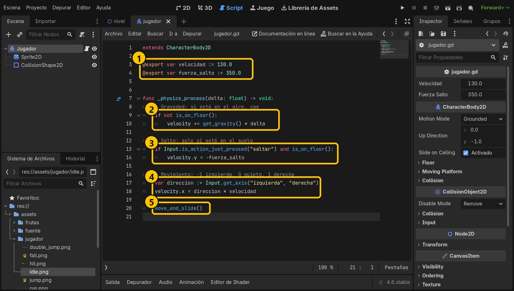
- 1Ajustables en el Inspector
- 2Gravedad
- 3Salto desde el suelo
- 4-1, 0 o 1
- 5Mueve y desliza
9Una cámara que le sigue
Vuelve a la vista 2D y añade a Jugador un hijo Camera2D: como es su hija, irá con él. En Limit pon Left 0, Top 0, Right 1024 y Bottom 272 (el tamaño del nivel), para que no enseñe lo que hay fuera. Guarda.
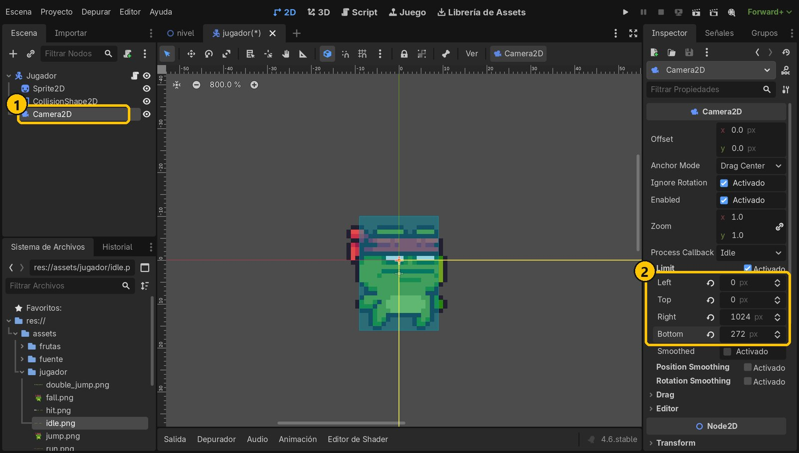
- 1Camera2D, hija de Jugador
- 2Límites del nivel
10Pon al jugador en el nivel
Abre la pestaña nivel, selecciona Nivel y pulsa Instanciar escena hija (el icono de la cadena). Elige jugador.tscn. En Transform → Position pon x = 48, y = 200, sobre el suelo a la izquierda. Guarda.
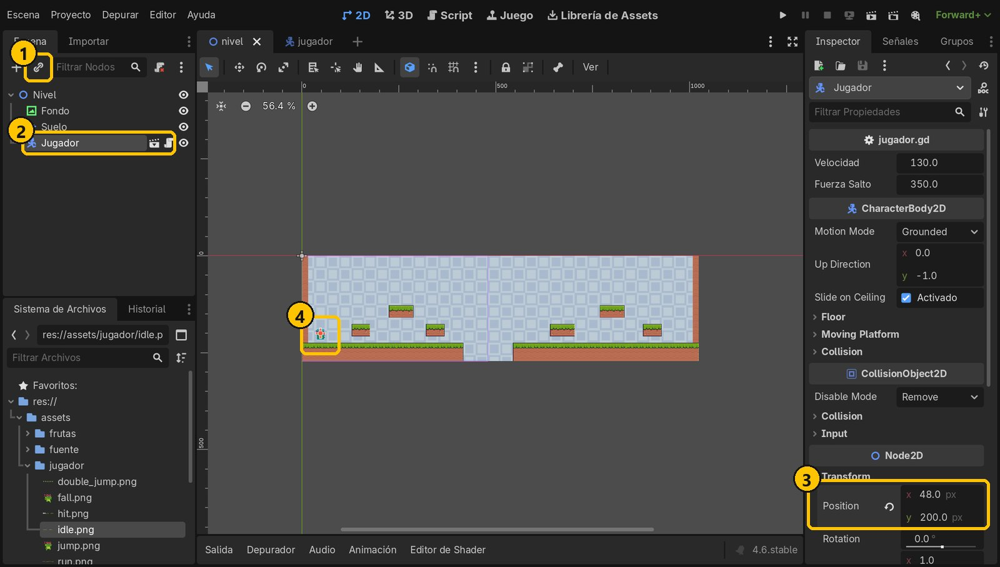
- 1Instanciar escena hija
- 2Jugador en Nivel
- 3Position: 48, 200
- 4Aquí empieza
11Ejecuta y juega
Ejecuta con F5. Muévete con A/D o las flechas y salta con Espacio a las islas. Prueba a pulsar saltar en el aire: no pasa nada, porque solo saltamos con is_on_floor(). La cámara te sigue sin salirse del nivel.
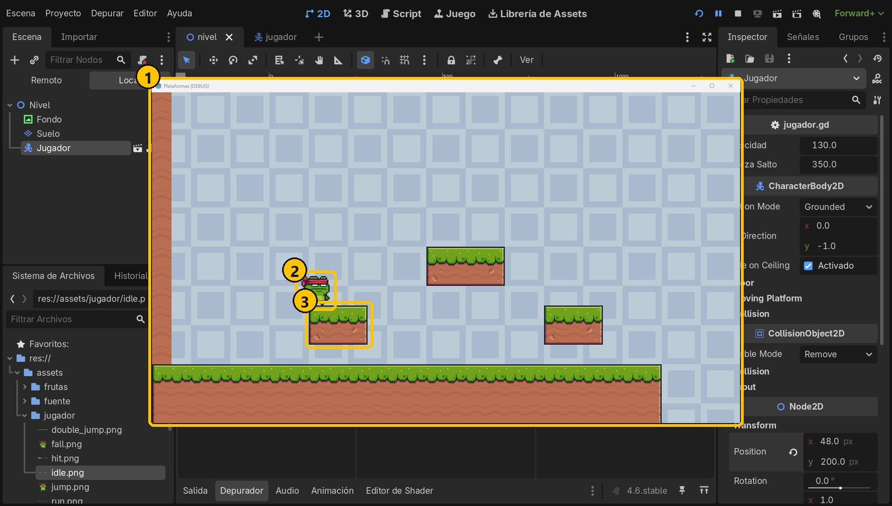
- 1El juego
- 2¡Salta!
- 3Aterriza en la isla
Resumen
- Un CharacterBody2D se mueve con su
velocityymove_and_slide(). - La gravedad se suma solo en el aire, y se salta solo si
is_on_floor(). Input.get_axis()convierte dos teclas en -1, 0 o 1, y la Camera2D hija sigue al jugador.
Si algo falla
- El jugador cae y atraviesa el suelo. Comprueba que el CollisionShape2D tiene una forma (Shape) y que es hijo de Jugador.
- No se mueve o da error «The InputMap action "saltar" doesn't exist». El nombre de la acción en el código debe ser exactamente el del Mapa de Entrada, en minúsculas.
- Salta en el aire sin parar. Falta
and is_on_floor()en la condición del salto. - El jugador sale volando hacia abajo al saltar. La velocidad del salto debe ser negativa (
-fuerza_salto): en Godot, laycrece hacia abajo. - La rana se ve borrosa. En Proyecto → Configuración → Renderizado → Texturas, el filtro por defecto debe ser Nearest (en el proyecto de inicio ya lo está).
Prueba tú
- Cambia Velocidad y Fuerza Salto desde el Inspector (gracias a
@export) hasta que el salto te guste. - Activa Position Smoothing en la Camera2D: ¿qué cambia?
- Haz que el salto sea más corto si sueltas la tecla pronto: con
Input.is_action_just_released("saltar"), sivelocity.y < 0, divídela entre 2.